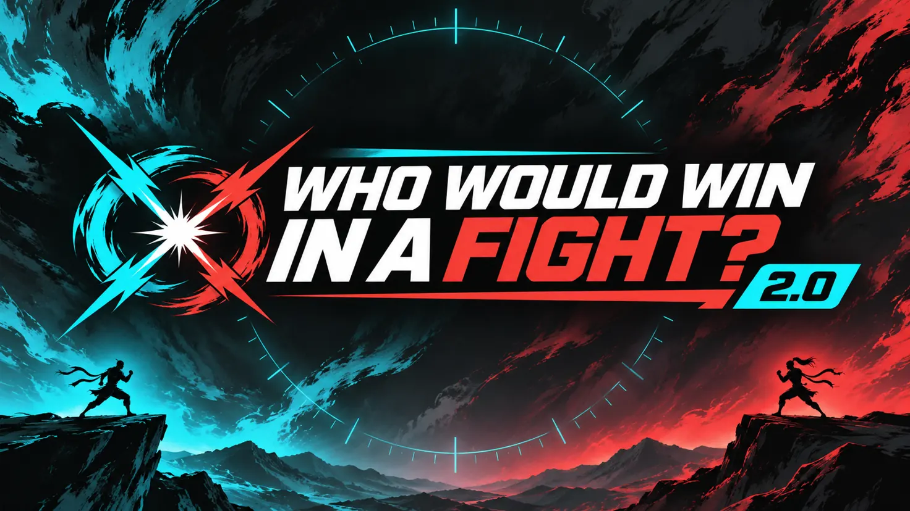

Who Would Win in a Fight? 2.0

Set up a matchup
Fighter roster
Win–loss record
Saved simulations on this device. Exhibition matchups and fictional canon records are separate.
How scoring works
Ratings are rough estimates for the listed forms, across this project’s roster. A category’s lowest anchor is 1 and its highest anchor is 100. Fighters can share a rating. These numbers have no probability interpretation.
The app compares 11 weighted categories. A margin within two points is a toss-up. The scenario assumes standard gear and no outside help or preparation. Stage modifiers are usually capped at ±10 per category and final ratings stay between 1 and 100.
Classic uses six category points and breaks tied point counts with the sum of the six ratings. Classic uses the current roster ratings and skips arena effects.
Recovery, sealing, control, and other unusual win conditions can behave differently across fictional worlds. The outcome panel shows the evidence notes so you can judge such cases yourself.
Downloads
Apple and Linux can run the web version. On iPhone or iPad, open it in Safari to add it to your Home Screen.